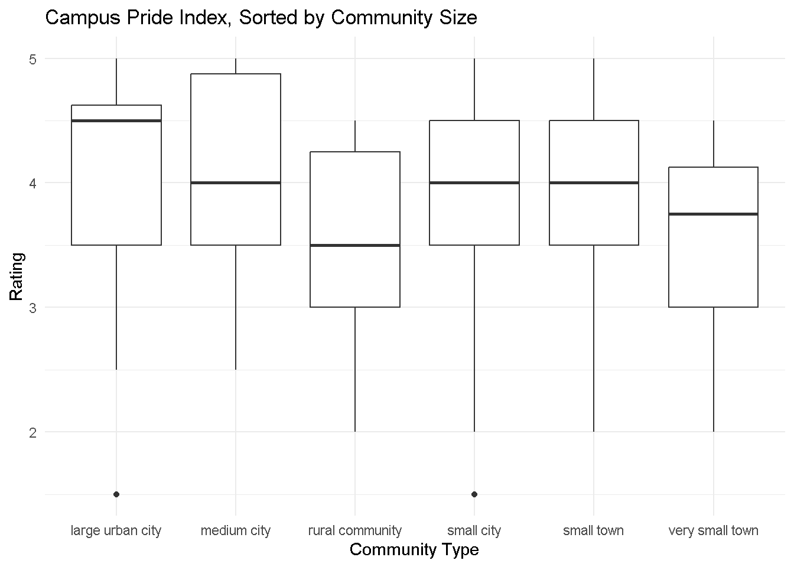

I’ve decided to finally take the leap to learn R by participating in Tidy Tuesday! My professor, Jo Hardin, has helped me learn the basics of R. So now, I want to put these skills to the test with some straightforward data-viz.
Here is some background information on the data for this project, if you wish to look into the data:
“The Campus Pride Index is owned and operated by Campus Pride, a leading national nonprofit dedicated to fostering safer and more LGBTQ-friendly learning environments at colleges and universities. Supported by the Campus Pride Q Research Institute for Higher Education, the index benefits from strategic partnerships in higher education and LGBTQ-related organizations. The index aims to advance LGBTQ-inclusive policies, programs, and practices in higher education.”
I am intersted in the correlation between size and school rating - I grew up in a small town, and can guarantee that size can jnfluence how you express your identity!
Below, you will find a box plot highlighting the Campus Pride Index’s scores varying across campus community sizes. There is a correlation between community size and ratings, with smaller communities generally scoring lower among queer students (with a few notable exceptions).
library(tidyverse)library(dplyr)library(httr2)tuesdata <- tidytuesdayR::tt_load(2024, week =24)pride_index <- readr::read_csv('https://raw.githubusercontent.com/rfordatascience/tidytuesday/master/data/2024/2024-06-11/pride_index.csv')pride_index_tags <- readr::read_csv('https://raw.githubusercontent.com/rfordatascience/tidytuesday/master/data/2024/2024-06-11/pride_index_tags.csv')# pulling column names to check data typecolnames(pride_index)# pulling variables of inerestcommunity_type <- pride_index$community_typerating <- pride_index$rating# plotting!ggplot(data = pride_index, aes(x = community_type, y = rating)) +geom_boxplot() +labs(x ="Community Type",y ="Rating",title ="Campus Pride Index, Sorted by Community Size" ) +theme_minimal()

And there we go! It’s clear that this correlation is prevalent in this data set, though there are some notable outliers! This data set is a really cool tool, and I;ll definitely use it in the future if I ever plan on visiting/returning to academics in the future.